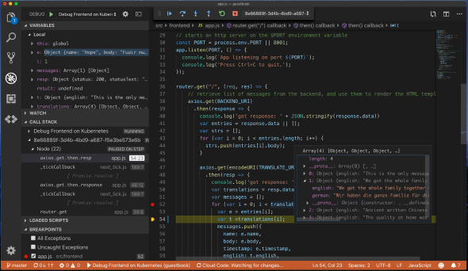

ça sert à quoi? UN IDE
Définition

Integrated Development Environment (en français « environnement de développement »), est un logiciel qui rassemble des outils
permettant de développer d’autres logiciels tels que des applications mobiles, des logiciels pour ordinateur ou consoles de
jeux, des sites web, etc ; ainsi que de réaliser des librairies ou des frameworks, c’est-à-dire des morceaux de code qui
pourront être sauvegardés et réutilisés dans d’autres programmes.
Il existe de nombreux IDE. Certains permettent de développer pour un système d’exploitation spécifique, d’autres sont polyvalents.
NOTRE TOP 3
Sublime Text
Sublime Text est un éditeur de texte générique codé en C++ et Python, disponible sur Windows, Mac et Linux. Le logiciel a été conçu tout d'abord comme une extension pour Vim, riche en fonctionnalités1. Depuis la version 2.0, sortie le 26 juin 20122, l'éditeur prend en charge 44 langages de programmation majeurs, tandis que des plugins sont souvent disponibles pour les langages plus rares.